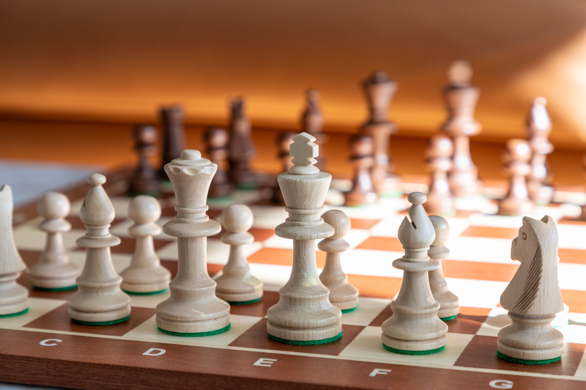

I demonstrate my logical-mathematical intelligence through my ability to recognize patterns, analyze problems, and think critically. My interest and curiosity in my current subjects help me nurture my logical-mathematical intelligence even more. General Mathematics allows me to explore numerical relationships and logical concepts, while General Chemistry and General Science deepen my understanding of how things work and how scientific principles explain the world around me. I am also interested in Philosophy, which challenges me to question assumptions, examine different perspectives, and construct logical arguments.One way I apply these skills is through playing chess, where I have achieved a rating of 1200 Elo. Chess helps me develop strategic thinking, anticipate possible outcomes, and make decisions based on careful analysis. Aside from that, creating this e-portfolio website allowed me to apply logical thinking and problem-solving in web development, organizing information and structuring the website to make it functional and presentable. These experiences reflect my enjoyment of challenges that require reasoning, creativity, and a systematic approach to finding solutions. Additionally, I also competed in various competitions in Science and IT that challenged my critical-thinking and problems-solving skills in those respective fields: Go to page →